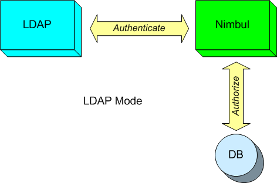
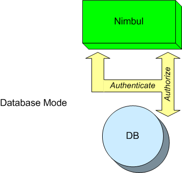

User Accounts: Overview
This section covers user account management tasks.
Note: Do not confuse user accounts with cloud provider accounts. In this documentation, a “user account” refers to a Nimbul user name, password, public key and set of access rules. The term “user account” does not describe an Amazon EC2 account or other cloud provider account.
For an overview of user accounts and access control in Nimbul, see Permissions and Roles.
| Role/Access Level | Relevant Topics |
| Nimbul Administrators | Managing User Accounts |
|---|---|
| All Users | Signing Up for an Account Permissions and Roles |
Authentication and Authorization
The following diagrams summarize Nimbul’s two modes of authentication and authorization: LDAP mode and database mode.

